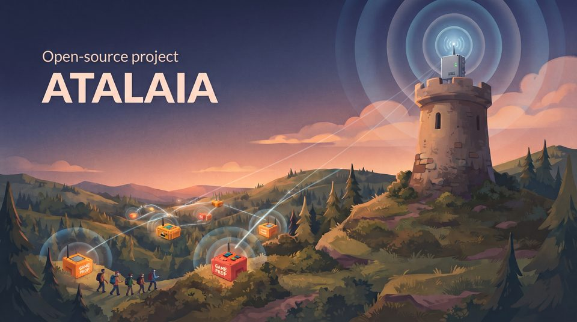
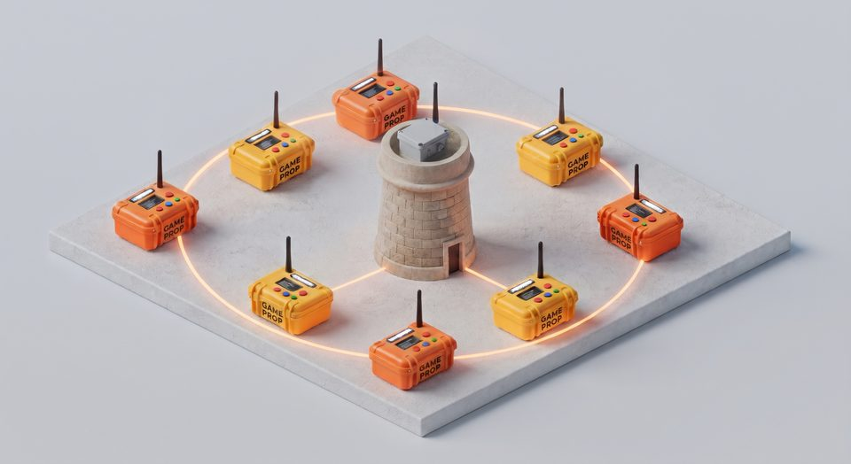

Domination
A team holds the prop's input for a few seconds to claim it, and scores every tick while it keeps it. The other team can take it over at any time.
Pre-alpha · phase 2 software done, phase 3 started · not field-ready yet
Atalaia is an open platform for the electronic props of airsoft, paintball and milsim: the boxes teams capture, the bombs they arm and defuse. Build a domination box from a €20 microcontroller (a tiny, cheap computer board), turn an old Android phone into a hacking terminal, run a 20-box weekend milsim on a LoRa mesh (long-range, low-power radio that the boxes relay to one another across the field), and write your own game modes as small scripts. Every game runs on the field itself: no cloud or internet needed, and no manufacturer can lock you in.
Atalaia (ah-tah-LYE-ah) is Portuguese for watchtower: a lookout on a hill that watched for trouble and passed the warning along. Why that name?

Playing needs no technical knowledge. This is how a game will run once the boxes are built (phases 1 and 2); the simulator already plays the same modes on a computer today.
The organisers place the boxes around the field and pick a game mode, such as Domination, on a box's keypad or from a phone, in under a minute.
To take a box, a team holds its colour's button for a few seconds. The box lights up in that colour and scores for the team until the other side takes it back.
Each box reports by radio to the field controller, a small computer at the base; boxes far away are relayed by the ones in between. A box that loses contact keeps playing and catches up later.
The controller adds it all up. The organisers follow the game live on their phones, and the field can show the score on a big screen or on a stream.
Electronic props add a lot to a game, but commercial systems keep the rules locked inside closed firmware. New modes wait on the vendor, there is no public API, and you cannot add your own hardware. Atalaia does it differently.
Every game runs on the field itself, fully offline, from a single house to a multi-kilometre forest. The internet is optional.
Cheap ESP32 boards, credit-card-sized Raspberry Pi computers, simple Arduino-class boards and new or repurposed Android phones all play in the same game.
Game modes are short Lua scripts, small text files of rules, with a settings file. Change or share one without reflashing (reinstalling) the boxes' built-in software.
Props talk over Skirmesh-RF, a documented radio protocol, so anyone can build a device that joins in. The field controller offers MQTT, REST and WebSocket APIs for scoreboards, stream overlays and other tools.
Player roles, squads, custom scenarios, and a chrono registry that keeps each replica's readings for spot checks are part of the design.
Fields that charge entry and makers who sell boxes are welcome. Anyone who ships or hosts a changed version shares the changes back.
In plain words: the props on the field talk by radio to the field controller, a small computer at the base that runs the game and keeps the score. Phones connect to it over Wi-Fi, and scoreboards, stream overlays and map apps such as ATAK through its API. An optional site server on the internet keeps accounts and history. The controller, its API and the organisers' console are built and tested on a computer, not yet on the field; the site server comes in a later phase.
Under the hood, every device that runs game modes uses the same shared core, written in C11, and the same Lua modes; only a thin layer for each kind of hardware differs. A mode written once plays the same on a box, a phone or a Raspberry Pi.

The props talk over LoRa, a long-range, low-power radio, in Atalaia's own protocol, Skirmesh-RF. These two diagrams show what LoRa can and cannot do on a field, and how one protocol runs on very different devices. None of it has been on a real field yet: range and timing will be measured in the phase 2 field test.
LoRa trades speed for reach: it gets short messages across a field on very little battery, and its signal gets through walls and trees better than Wi-Fi does, although concrete, metal and hills still block it. A box that cannot reach the controller is heard through the other boxes, and European rules limit how much of the time each device may transmit.
![Five panels. Chirps: LoRa sends each symbol as a tone that sweeps across the channel, and a receiver that knows the pattern can decode it even below the background noise, so it reaches far on little power but carries only short messages. Spreading factor: each step up from SF7 about doubles the time a message spends on air, for a little more range; the boxes use SF7 today. Range: longest over open ground in line of sight, shorter through woods, people and vehicles, much shorter inside buildings, and cut off by concrete, metal or a hill, where a box in between can relay; 868 MHz gets through obstacles better than 2.4 GHz Wi-Fi or Bluetooth. The design estimate of about 0.5 to 2 km on a typical outdoor field is still to be measured in the phase 2 field test. Relays: a box out of the controller's reach is heard through the other boxes, and a message is passed on at most twice by default. Rules in Europe: one shared game channel, 869.525 MHz by default, the only part of the band that allows 500 mW and 10% of the time, 6 minutes per hour for each device; other channels allow 25 mW and 1% or less.](../img/diagrams/lora-narrow-en.svg)
All of a game's traffic shares one channel. The default, 869.525 MHz, is the centre of 869.4–869.65 MHz, the only part of the European 868 MHz band where a device may transmit up to 10% of the time at up to 500 mW. Elsewhere in 868–870 MHz the rules allow 1% of the time (0.1% on 868.7–869.2 MHz) at 25 mW: about a tenth of the airtime, and much less range. 868.1, 868.3 and 868.5 MHz are LoRaWAN's default channels and often busy. The default is shared too: LoRaWAN gateways send some replies on 869.525 MHz and Meshtastic's European default uses it, so near such users the GM can let the controller listen to every legal channel for a minute and pick the quietest, draw one at random, or choose by hand. The boxes then follow the chosen channel's own limits.
Skirmesh-RF is built in layers, from the radio up to the controller's API. A Field Box runs everything up to the game modes; a Raspberry Pi controller leaves the radio work to a USB radio modem; in phase 3 an Android phone will do the same with an I/O pod. Phones on the field's Wi-Fi need no LoRa radio at all.
![Left, the five layers of Skirmesh-RF from the bottom up: 1, the LoRa radio on one shared game channel; 2, the Skirmesh-RF packet, with AES-128-CCM encryption under a key for each game, epoch and sequence numbers against replays, a hop limit for relaying (two relays by default), ACKs, TIME beacons and CLAIM for controller failover; 3, the messages HELLO, EVENT, ACK, STATE, CMD, TIME, CONFIG and CLAIM in CBOR; 4, the shared C core and Lua game modes; 5, the field controller's REST, WebSocket and MQTT APIs, GM console, scoreboard and join codes (NFC cards for boxes, QR codes for a standby controller and, in phase 3, phones). Right, which layers each device runs. Built and tested in software, not yet on a field: the Field Box (layers 1 to 4), the USB radio modem (1 and 2) and the field controller on a Raspberry Pi or PC (2 to 5), and the GM console on phones over Wi-Fi, which use layer 5 with no LoRa radio. Planned: the satellite box (1 to 4) and, in phase 3, the I/O pod (1 and 2) that gives an Android phone or tablet (2 to 4) a radio, and the player app.](../img/diagrams/skirmesh-narrow-en.svg)
Modes react to intent ("a team is claiming this prop"), not to hardware, so the same script runs on a box with two arcade buttons, a keypad box or a tablet. Two classics are written and tested today.
A team holds the prop's input for a few seconds to claim it, and scores every tick while it keeps it. The other team can take it over at any time.
Attackers hold to arm the bomb, then defend it. Defenders must hold long enough to defuse it before the fuse runs out. Fuse and hold times are settings.
Respawn counters, hacking terminals, VIP escort, master-and-satellite zones… Modes are short scripts. Propose one with the game mode idea template.
Eight captures from the real Field Box firmware (ESP32, LVGL 9.2, 320 × 240 TFT) running in the Wokwi emulator. The box UI is in English. Not yet tested on physical hardware.


The build manual has the full wiring diagram and first-flash guide for the Heltec WiFi LoRa 32 V4.
There is nothing to flash yet, but the shared core runs on a computer. The simulator plays a mode in your browser: hold team buttons, watch each prop's screen and follow the event log. The commands below are typed in a terminal.
cmake -S core -B build -DATALAIA_SHARED=ON
cmake --build build
cd simulator
python -m atalaia_sim serve ../modes/bombcd simulator
python ../tools/docker_sim.py serve ../modes/bombThen open http://localhost:8000. You need Python 3.10+ with PyYAML. The simulator guide has every option.
Six phases. Each one ends with a real field test before the next begins.
Shared core, Lua sandbox, Skirmesh-RF codec, browser simulator.
Gate: the simulator runs Domination and Bomb from Lua scripts. Met.
Field Box build, ESP32 firmware, on-device presets, and a build manual with a wiring diagram.
Gate: one box runs a 2-hour club game with no restarts. The firmware and its screens are done and run in an emulator, and the build manual with its wiring diagrams is written; the gate stays open until the first boxes are built.
Skirmesh-RF over LoRa, field controller, API, GM console, and a mode pack, now written and tested in software: Hold-All Domination (score only while holding every box), Last Stand (a countdown to defeat while holding one of three), per-team arming codes on Bomb, and the Codes modifier (keypad codes that grant points, hints or unlocks, with the GM told who used them).
Gate: 5 boxes on a CQB site and an outdoor field, zero lost captures. The encrypted radio protocol, the field controller with its API, the USB radio modem, the organisers' console with a scoreboard, joining a game with an NFC card or a QR code, and the boxes' firmware talking to the controller are built and tested in the simulator, the emulator and on a computer, whole games included. The gate needs the radio boards.
Android props, I/O pod, player app with roles, and the modes that need players' phones: Respawn, Kill Confirmed, Player Check-in, Money Factory and chrono check-in. Started: Kill Confirmed, Respawn and Lives and Player Check-in read players' signed NFC tags on the Field Box, the I/O pod's link protocol is fixed, and modes describe their screens in YAML; all tested in software, no Android code yet.
Gate: one game mixes ESP32 and Android props without issues.
Site server, custom scenarios, advanced modes, ATAK.
Gate: a weekend milsim runs on Atalaia end to end.
Visual mode editor, mode registry, carrier PCB (a ready-made circuit board that makes builds easier), translations, build guides for other node types.
Ongoing after the first release.
Fields, teams and builders will meet here. Everything is opt-in: the hub holds only what people choose to publish, and game data stays on each field's own servers.
Questions, ideas, reviews of the design and event reports. Go to Discussions
Photos, bills of materials, enclosure files and wiring notes for each build, starting with the first Field Box prototypes.
An opt-in list of fields and teams that use Atalaia, with region, site type and a contact link.
The mode registry, with descriptions, downloads and community ratings.
Opt-in, anonymous totals of versions, platforms and modes played. Off by default.
For clubs without IT support, at cost, with every club's data separate and exportable.
The technical words on this page, in plain terms. The links in the text above lead here.
Atalaia is built by players, field owners and makers. You can help today by:
Every commit carries a Signed-off-by line, and the project is strictly clean-room, written from scratch: no code, firmware, manuals, sounds or images from any commercial product.
An atalaia is a watchtower: a lookout post on a hill or a stretch of coast. The word came into Portuguese from the Arabic aṭ-ṭalāʾiʿ, "the scouts", and estar de atalaia still means "to be on the lookout".
A field controller sees every prop on the field and tells the GM the moment something changes. Watchtowers were local-first too, and ran the original low-bandwidth mesh: smoke by day, fire by night, relayed from tower to tower. Skirmesh-RF follows the same rules with LoRa.
Atalaia props are game equipment. Make them look like game props: bright colours, clear "GAME PROP" labels, and nothing resembling a real explosive device. Transport them in labelled cases, never leave them unattended outside the field, and treat lithium batteries with care.